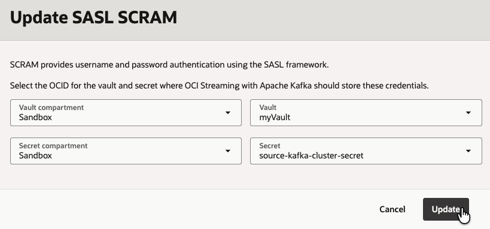
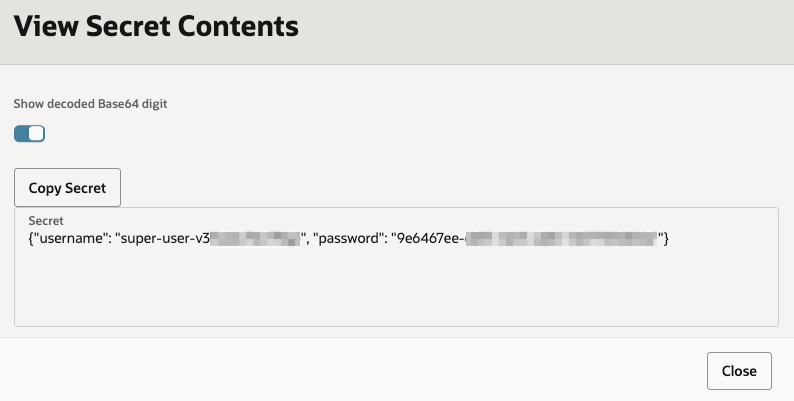
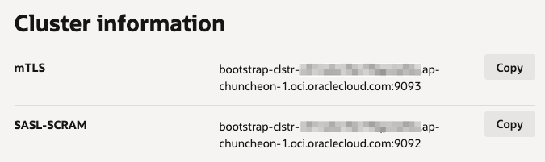
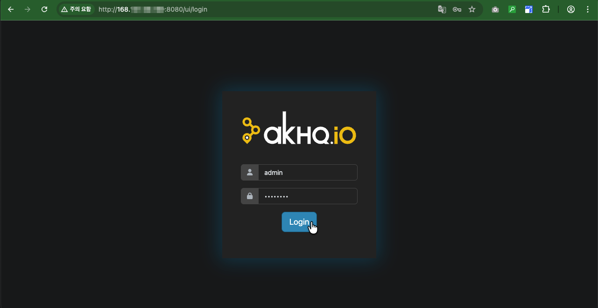
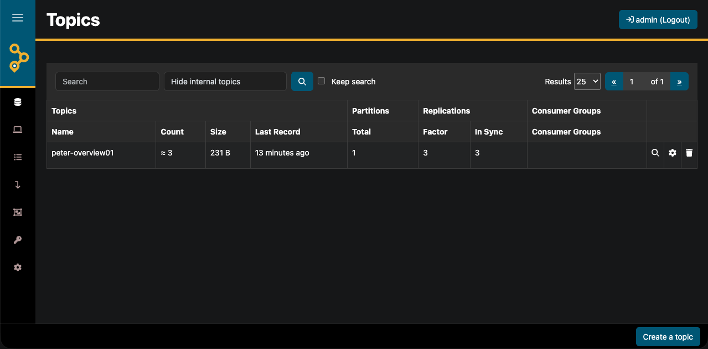
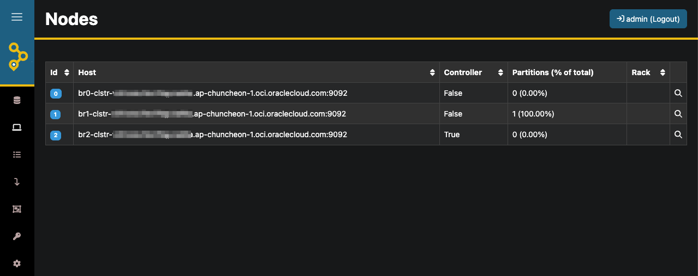

17.2.1 Kafka Cluster 만들기
OCI Streaming with Apache Kafka(OSAK)에서 지원하는 버전을 확인합니다. 작성일 기준 아직 업그레이드를 지원하지 않습니다.
- https://docs.oracle.com/en-us/iaas/Content/kafka/versions.htm
Apache Kafka Version OCI Release Date 3.7.0 27 August 2025 3.6.1 27 August 2025 3.6.0 27 August 2025
지원하는 기능 리스트
설치 전 주요 참고사항
- 현재는 Private networking만 지원합니다. 지정한 VCN, Subnet을 사용하여, Private IP로 연결가능합니다.
- 유저 패스워드를 사용하는 SASL_SCRAM 방식과 서버, 클라이언트 상호간 인증서를 통한 Mutual TLS (mTLS) 인증 방식을 지원합니다.
Kafka 클러스터 만들기
VCN, Subnet 준비
- 클러스터가 위치한 VCN, 서브넷을 준비합니다.
OCI IAM Policy 설정
-
서비스를 위해 IAM Policy를 생성합니다.
-
Name: 예,
streaming-with-apache-kafka-policy -
Description: OCI Streaming with Apache Kafka 서비스를 위한 Policy
-
규칙 #1
allow service rawfka to use vnics in compartment <compartment-name> allow service rawfka to {SUBNET_READ} in compartment <compartment-name> allow service rawfka to use network-security-groups in compartment <compartment> allow service rawfka to use subnets in compartment <compartment-name> -
규칙 2 - SASL_SCRAM 인증을 위해 설정
allow service rawfka to read secrets in compartment <compartment-name> allow service rawfka to use secrets in compartment <compartment-name> where request.operation = 'UpdateSecret'
-
SASL_SCRAM 인증시 사용할 Secret 생성
SASL_SCRAM 인증 방식을 사용하는 경우, Kafka 클러스터가 수퍼유저의 Username, Password를 OCI Vault의 Secret으로 관리합니다. 이때 사용할 Secret을 먼저 생성합니다. Secret은 하나의 Kafka 클러스터에서만 사용할 수 있습니다.
-
OCI Console에 로그인하여, OCI Vault 화면으로 이동합니다.
-
사용하고 있는 Vault, Master Key가 없는 경우 만듭니다.
-
새 Secret을 만듭니다.
-
Name:
source-kafka-cluster-secret -
Manual secret generation 선택
-
Secret Type Template:
Plain-Text -
Secret contents:
XXXKafka 클러스터 생성시 초기 유저명, 패스워드로 자동 업데이트됩니다. 지금은 빈값이 아니게만 텍스트를 입력합니다.
-
Kafka 클러스터 만들기
-
OCI Console에 로그인하여, Kafka 클러스터 관리화면으로 이동합니다.
-
Create cluster를 선택합니다.
-
생성할 정보를 입력합니다.
-
Cluster settings
- Cluster name:
source-kafka-cluster - Apache Kafka version:
3.7.0
- Cluster name:
-
Broker settings
- Cluster type:
High Availability Cluster - Number of brokers:
3 - OCPU per broker:
2 - Storage:
50 GB
- Cluster type:
-
Cluster configuration - 기본값 사용
allow.everyone.if.no.acl.found=true auto.create.topics.enable=false leader.imbalance.per.broker.percentage=1 default.replication.factor=3 offsets.topic.replication.factor=3 min.insync.replicas=2 transaction.state.log.min.isr=2 transaction.state.log.replication.factor=3 -
Security settings: 건너뜀
-
Networking
위치할 VCN, 서브넷 선택
-
설정 리뷰후 Create를 클릭합니다.
-
참고로 위 설정 기준으로 테스트 환경에서는 클러스터 생성은 18분 정도 소요되었습니다.
Status Timestamp Accepted 04:31:09 UTC Started 04:31:20 UTC Finished 04:49:56 UTC
-
Kafka 클러스터 SASL-SCRAM 업데이트
-
생성된 클러스터 상세화면의 경고 화면 또는 Actions 메뉴 아래 Update SASL SCRAM을 클릭합니다.
-
앞서 만들어둔 OCI Vault상의 Secret을 선택합니다.

-
클러스터의 업데이트가 끝나면, Settings 탭 > SASL SCRAM - Secret 에 있는 링크로 이동하거나 해당 Secret으로 직접 이동합니다.
-
Secret의 Versions 탭을 클릭하면, 초기 생성이후 Version number: 2가 현재 상태인 걸 확인할 수 있습니다.
-
우측 액션 메뉴에서 View Secret Contents을 클릭합니다. Base64로 인코딩되어 있으므로 Show decoded Base64 digit을 클릭하여 내용을 확인합니다. 아래와 같이 superuser의 유저명과 패스워드를 확인할 수 있습니다.

-
Kafka 클러스터 상세정보에서 아래쪽 Cluster Information의 SASL-SCRAM에 있는 주소를 이용해, 위 superuser를 사용하여 클라이언트에서 접속하면 됩니다.

-
사용하는 포트, 여기서는 9092 포트를 클라이언트가 접속할수 있게 미리 Security List에 등록합니다.
-
Kafka Client로 OSAK Kafka 클러스터 연결하기
OCI 문서 Creating a Kafka Client 항목을 참고하여 Kafka 클라이언트를 설치합니다. Kafka 클러스터는 현재 Private Networking만 지원하므로는 여기서는 같은 VCN 상의 Public Subnet에 만들도록 하겠습니다.
-
Kafka 3.7 Documentation을 바탕으로 지원 버전(Java 8, Java 11, Java 17) 중에서 deprecate 되지 않은 Java 17를 설치합니다. JDK 17 최신버전을 다운로드 받습니다. OCI에서는 무료이므로 다운로드 받습니다.
-
생성한 VM으로 파일을 업로드후 SSH로 접속합니다.
scp jdk-17.0.17_linux-x64_bin.rpm opc@168.xxx.xx.xxx:/home/opc ssh opc@168.xxx.xx.xxx -
설치합니다.
sudo rpm -Uvh jdk-17.0.17_linux-x64_bin.rpm sudo alternatives --config java -
Kafka Client를 다운로드 받습니다.
wget https://downloads.apache.org/kafka/3.7.2/kafka_2.13-3.7.2.tgz tar -xzf kafka_2.13-3.7.2.tgz cd kafka_2.13-3.7.2/ -
환경 변수를 설정합니다.
# Add Kafka to PATH echo 'export KAFKA_HOME=/home/opc/kafka_2.13-3.7.2' >> ~/.bashrc echo 'export PATH=$PATH:$KAFKA_HOME/bin' >> ~/.bashrc source ~/.bashrc -
SASL_SCRAM 인증 설정을 위해
client.properties파일을 업데이트합니다. OCI Vault Secret에서 확인한 superuser 정보를 입력합니다.# kafka_2.13-3.7.2/config/client.properties security.protocol=SASL_SSL sasl.mechanism=SCRAM-SHA-512 sasl.jaas.config=org.apache.kafka.common.security.scram.ScramLoginModule required username="<user name from OCI Secret>" password="<password from OCI Secret>"; -
접속 URL
- boorstap url: 클러스터 상세 정보 > Cluster Information > SASL-SCRAM 주소 사용
- url 에서 사용하는 포트: 9092 또는 9093(mTLS) 포트를 클라이언트가 접속할수 있게 미리 Security List에 등록할 것
- boorstap url: 클러스터 상세 정보 > Cluster Information > SASL-SCRAM 주소 사용
-
현재 Topic 조회해 보면 아직 아무것도 없습니다.
export KAFKA_HEAP_OPTS="-Xmx1G -Xms1G" BOOTSTRAP_URL=bootstrap-clstr-xxxxxxxxxxxx.kafka.ap-chuncheon-1.oci.oraclecloud.com:9092 ./bin/kafka-topics.sh --list --bootstrap-server $BOOTSTRAP_URL --command-config ./config/client.properties -
Topic을 생성합니다.
TOPIC_NAME=peter-overview01 ./bin/kafka-topics.sh --create --bootstrap-server $BOOTSTRAP_URL --command-config ./config/client.properties --topic $TOPIC_NAME --partitions 1 --replication-factor 3 -
생성결과를 조회합니다.
$ ./bin/kafka-topics.sh --list --bootstrap-server $BOOTSTRAP_URL --command-config ./config/client.properties peter-overview01 $ ./bin/kafka-topics.sh --bootstrap-server $BOOTSTRAP_URL --command-config ./config/client.properties --describe --topic $TOPIC_NAME Topic: peter-overview01 TopicId: V8OWJ-aIRa6a27mgOvKWRA PartitionCount: 1 ReplicationFactor: 3 Configs: min.insync.replicas=2,message.format.version=3.0-IV1 Topic: peter-overview01 Partition: 0 Leader: 1 Replicas: 1,0,2 Isr: 1,0,2 -
Comsumer를 시작합니다.
$ ./bin/kafka-console-consumer.sh --bootstrap-server $BOOTSTRAP_URL --topic $TOPIC_NAME --consumer.config ./config/client.properties --group my-consumer-group -
메시지를 생성합니다.
$ ./bin/kafka-console-producer.sh --bootstrap-server $BOOTSTRAP_URL --topic $TOPIC_NAME --producer.config ./config/client.properties > Message 1 > Message 2 > -
Comsumer를 보면, 메시지를 수신한 것을 볼 수 있습니다.
$ ./bin/kafka-console-consumer.sh --bootstrap-server $BOOTSTRAP_URL --topic $TOPIC_NAME --consumer.config ./config/client.properties --group my-consumer-group Message 1 Message 2 -
Comsumer를 종료합니다.
$ ./bin/kafka-console-consumer.sh --bootstrap-server $BOOTSTRAP_URL --topic $TOPIC_NAME --consumer.config ./config/client.properties --group my-consumer-group Message 1 Message 2 ^CProcessed a total of 2 messages -
메시지를 추가 생성합니다.
$ ./bin/kafka-console-producer.sh --bootstrap-server $BOOTSTRAP_URL --topic $TOPIC_NAME --producer.config ./config/client.properties > Message 1 > Message 2 > Message 3 > Message 4 > -
Comsumer를 다시 시작합니다. 이후 처리된 메시지 이후부터 처리되는 것을 알수 있습니다.
$ ./bin/kafka-console-consumer.sh --bootstrap-server $BOOTSTRAP_URL --topic $TOPIC_NAME --consumer.config ./config/client.properties --group my-consumer-group Message 3 Message 4
Kafka UI AKHQ
AKHQ는 Apache Kafka를 위한 오픈소스 GUI입니다. OSAK로 연결해서 모니터링이 되는 지 확인해 봅니다.
-
Compute VM에 AKHQ를 다운로드 받습니다.
wget https://github.com/tchiotludo/akhq/releases/download/0.26.0/akhq-0.26.0-all.jar -
설정파일
application.yml을 작성합니다.-
bootstrap.servers: SASL-SCRAM BOOTSTRAP_URL 사용
-
sasl.jaas.config: OCI Vault Secret에서 확인한 superuser 정보를 입력
-
akhq.security.basic-auth.password: 사용할 암호를 다음명령으로 변경하여 입력합니다.
echo -n "password" | sha256sumakhq: server: access-log: enabled: true name: org.akhq.log.access connections: source-kafka-cluster: properties: bootstrap.servers: "<bootstrap url:9092>" security.protocol: SASL_SSL sasl.mechanism: SCRAM-SHA-512 sasl.jaas.config: org.apache.kafka.common.security.scram.ScramLoginModule required username="<username>" password="<password>"; server: port: 8080 micronaut: security: enabled: true akhq.security: basic-auth: - username: admin password: "<SHA-256 hashed password>" groups: - admin default-group: no-roles
-
-
Oracle Linux OS 방화벽을 개방합니다.
sudo firewall-cmd --permanent --add-port=8080/tcp sudo firewall-cmd --reload -
VM이 속한 서브넷 Security List에서 8080 포트 개방합니다.
-
AKHQ를 실행합니다.
java -Dmicronaut.config.files=application.yml -jar akhq-0.26.0-all.jar -
브라우저로 접속합니다. 설정한 암호를 이용하여, admin 유저로 접속합니다. Topic, Nodes 등 Kafka 클러스터 정보를 조회할 수 있습니다.

-
Topic

-
Nodes

-
이 글은 개인으로서, 개인의 시간을 할애하여 작성된 글입니다. 글의 내용에 오류가 있을 수 있으며, 글 속의 의견은 개인적인 의견입니다.